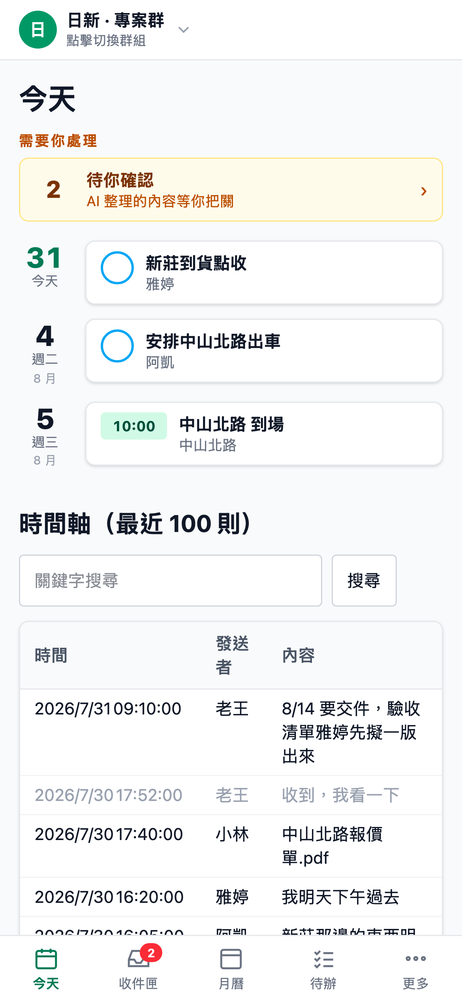

事情，都在群組裡
講完了。
然後，
沉到訊息海裡。
群記
它安靜待在群裡，幫你記住。
你照常講話，
其餘自動發生。
下週三早上八點到現場
↓
行程
到現場
週三 08:00
@小林 這份資料你先看一下
↓
待辦
看資料
負責人：小林
以後估價單一律副本給會計
↓
公告
估價單副本給會計
團隊規則
AI 先整理，
你按確認才算數。
每一筆，
都點得回原始那句話。

忘了？
在群裡問它就好。
@群記 上次那份報價
是誰傳的？
群
群
群記
是小林在 7/30 傳的
〈中山北路報價單.pdf〉
↳ 來源：小林・7/30 17:40
群記
GROUPSCRIBE
群裡講過的，都記得。
不用裝 App
不打擾群組
程式碼全公開